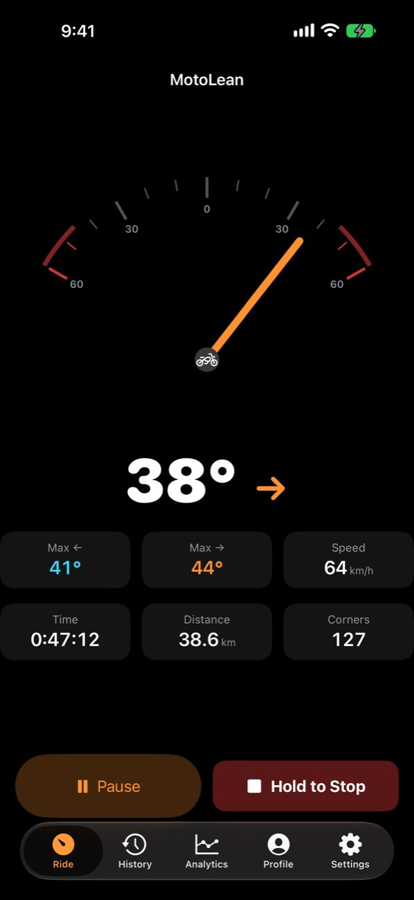

Raw signal
Attitude, rotation, gravity and acceleration at 100 Hz, plus every field of every GPS fix. After the ride each 0.1 s step is rebuilt from all readings in its window, so bar vibration can't alias into the lean.
100 Hz → 10 Hz · anti-aliasNot a toy lean meter. MotoLean builds a mathematical model of every corner you ride: 100 Hz sensor fusion, the geometry of your handlebars and a Kalman-filtered trajectory. Seconds after the exit it tells you in your helmet what the numbers say: your lean, a score out of 100 and the one thing to fix.
Free for iPhone · iOS 17 or later · coming to the App Store soon
“44, right. 95 points.”3 s after the exit
Most lean apps read one number off the phone. MotoLean runs a five-stage pipeline on your iPhone, measures itself against the physics of the turn, and only then gives you a score. No cloud, no guesswork.
Attitude, rotation, gravity and acceleration at 100 Hz, plus every field of every GPS fix. After the ride each 0.1 s step is rebuilt from all readings in its window, so bar vibration can't alias into the lean.
100 Hz → 10 Hz · anti-aliasHandlebar calibration finds the steering axis and the lock stops. Lean is measured in the bike's frame, then corrected for the bar angle, so tight turns read the same left and right.
tan δ = L·ω·cos φ / (v·cos ε)GPS speed and course lag the motion sensors by about a second. MotoLean measures that lag on each ride and shifts every fix back to the moment it describes.
Δt course ≈ 1.1 s · position 0.3 sSpeed and accelerometer bias are estimated with a Kalman filter and a backward RTS smoother; gyro, speed and GPS fuse into a 10 Hz trajectory. The accelerometer is used only if it passes a regression test against GPS.
x = [v, b]ᵀ · RTS · r ≥ 0.6Curvature from the gyro locates the apex; braking, tip-in and throttle are found on a distance axis around it. Twelve criteria give four phase scores, each with a confidence level.
κ = Δψ / Δs · apex: κ ≥ 0.8 κmaxMeasured lean divided by the lean that speed and turn rate demand, in steady corners on four road test rides. No fudge factors: the old empirical corrections were removed once the model matched.
With the phone on the bars, turning the handlebars tilts the phone and inflates the lean by 8–9°. The steering model removes it, and both sides land within a degree of each other.
Braking ends, tip-inThe bike rolls in to 41° left
ApexSlowest point of the corner
Exit, bike stands upThe model scores 12 criteria in 4 phases
“41, left. 72 points. Open the throttle earlier.”
Cardo, Sena or earbuds. Prompts play over your music or dip it for a second.
The model ranks the four phases and speaks only about the weakest, so you know exactly what to try next time.
Records and speaks in the background, with the ride on the Lock Screen and in the Dynamic Island.
Pick a row to see the real screen.

Add every bike to the Garage. Each keeps its own handlebar calibration, so swapping bikes never costs you accuracy.
Deep leans, fast direction changes. The 100 Hz log catches every flick.
Upright position, big steering input. The steering model keeps left and right honest.
Session after session on the same corners. See which pass was cleanest, phase by phase.
No ads, no subscription. Optional tips unlock nothing.
The whole model runs on your iPhone. No cloud, no sign-up, no tracking.
English, Русский, Deutsch, Español, Français, Italiano, 日本語 and more.
Scores rate technique. More speed or lean never earns points.
A full corner model, free for iPhone. MotoLean is in review now and will be on the App Store soon.